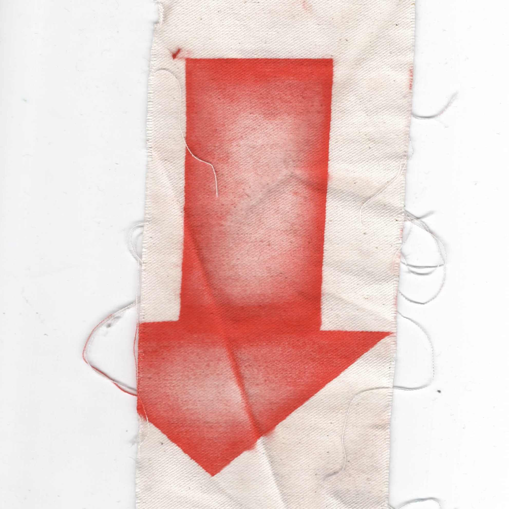
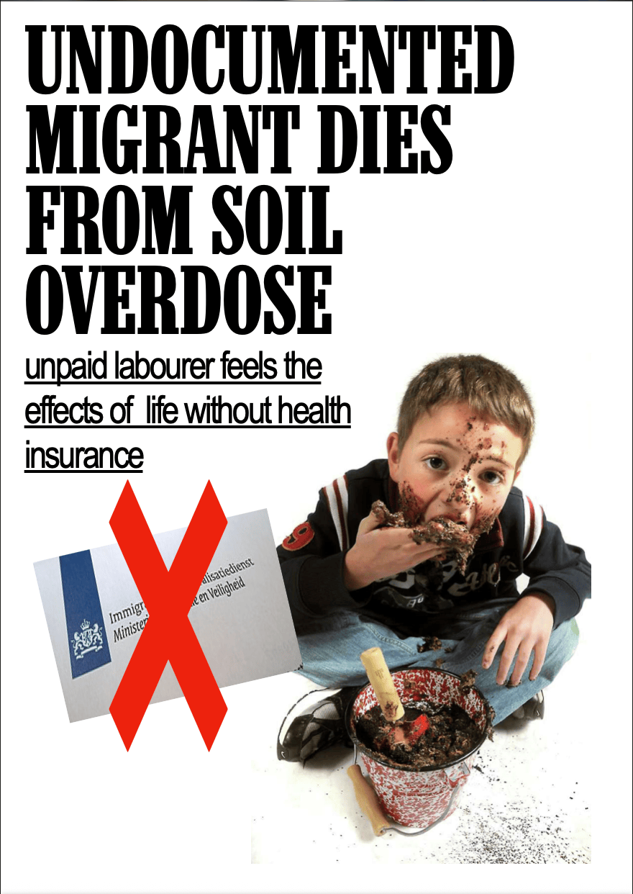
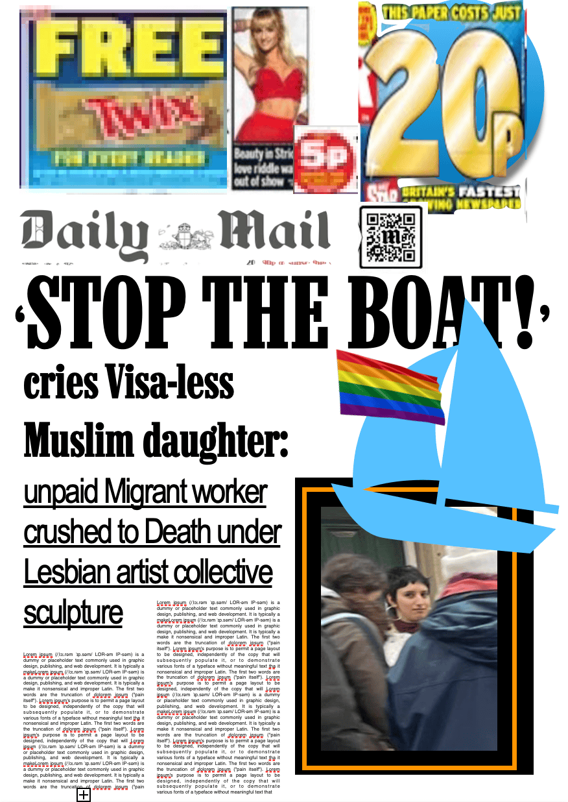
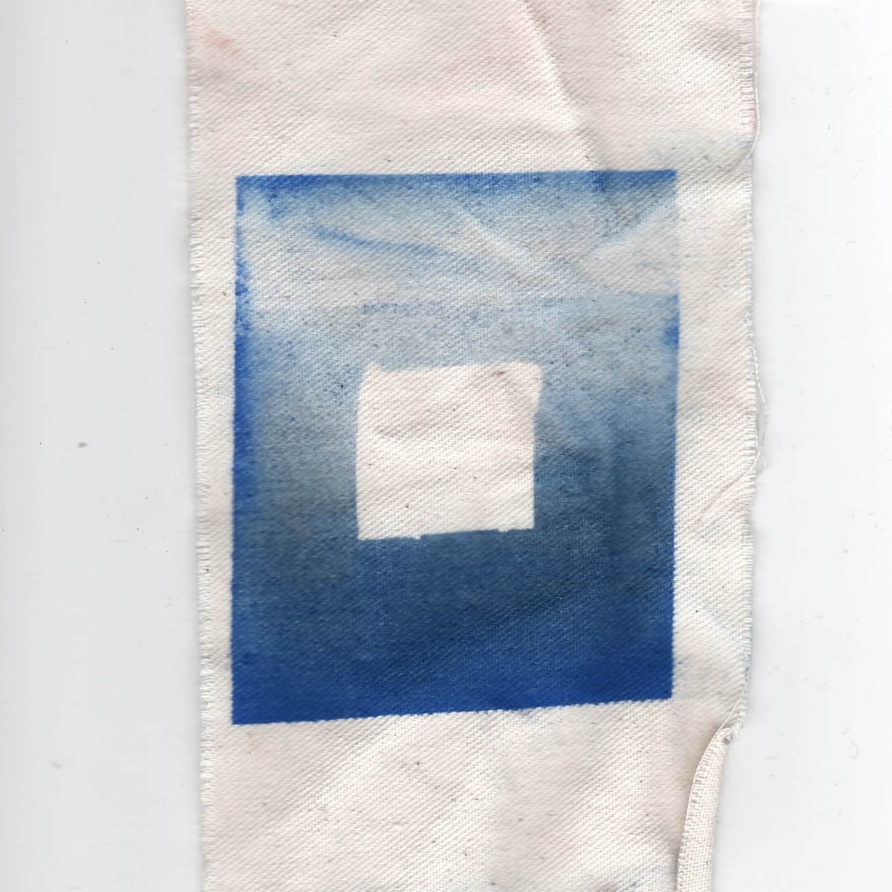
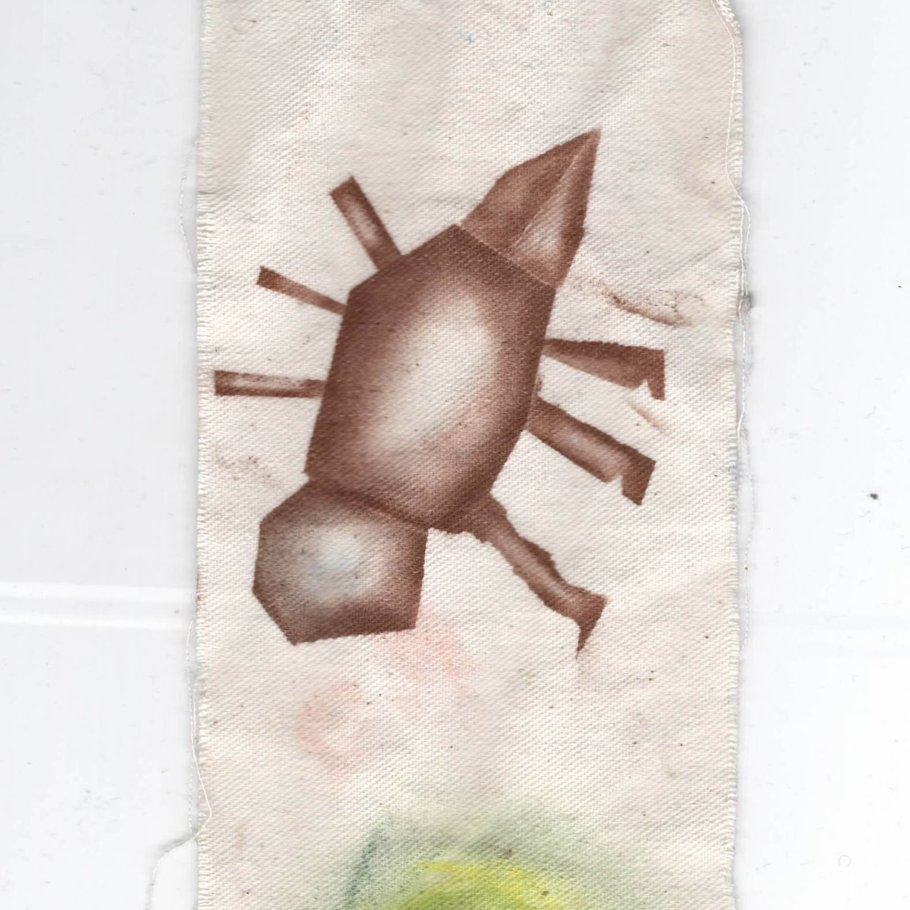
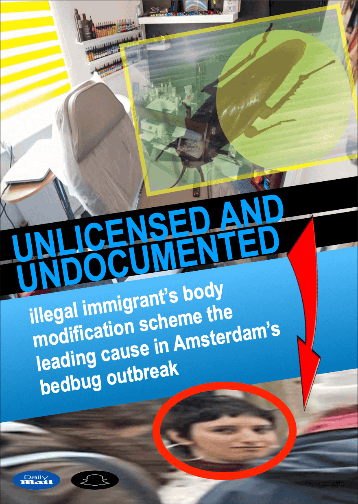

Undocumented Daily - Laila Sorabji


I reimagine myself as the subject of tabloid anti-immigration narratives that have been prolific in the UK, and the rest of Europe, since the so-called ‘migration crisis’. The pieces employ satirical clickbait headlines based on imagined, video-game-like endings to my own life as an immigrant. I draw on aspects of my real life and the various pathways I have actually pursued to reunify with my partner. The fictional paper, Undocumented Daily, reports much like The Daily Mail, The Star, The Daily Express and many other Rupert Murdoch owned newspapers that rely on praying on catching people’s eyes, baiting them into rage and mongering their fear.


I turn the common and nonsensical social construct of ‘expat’ on its head, putting forward the fact that if I were to move to the Netherlands, across a Brexit border, without extensive documentation, Visas, tracking and approval, I would be an illegal immigrant. Much like many British would be.

